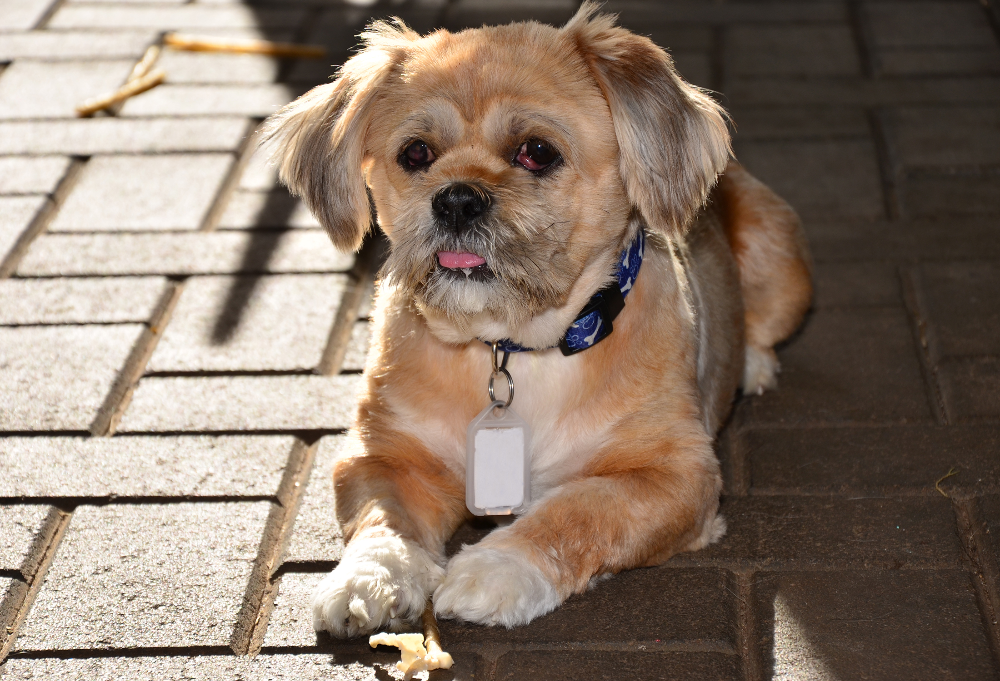
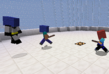
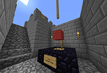
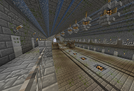

|
Angel - RSPCA Foster Dog - Photography
Angel is a two year old foster animal.
My family has been fostering Angel for three months.
He was surrendered to the Royal Society for the Prevention of Cruelty to Animals (RSPCA).
Angel has recovered from Mange, which is a skin condition and from two "Cherry eyes".
When he fully recovers, he will be put up for adoption.
|
 |
 |
Sumotori - Minecraft Server Plugin
Sumoroti is a replica of the Japanese sport Sumo.
Essentially, player battle it out with a
stick (with added knockback) and the last team standing, wins!
Client: MineVision.
|
Capture The Flag - Minecraft Server Plugin
Capture The Flag is a fast paced gamemode where two teams have to battle it out to retrieve the other teams Flag, and take it to their base. This scores a point. You need three points to win.
Client: LavaCraft.
|
 |
 |
FreezeTag - Minecraft Server Plugin
FreezeTag is a simple replica of the childhood game of "Freeze" or "Stuck in the Mud". Essentially, the Tagger has to tag all players to win. When a player is tagged, they cannot move. When they are not tagged, they can untag tagged players.
Client: SkyServers.
|
|
|
|
 |
StrayyaPrison - Minecraft Server
StrayyaPrison is a Prison roleplayer server in Minecraft, where players have to complete tasks to earn money, and work their way through the prison blocks (ranks) to eventually escape and be free.
Client: StrayyaPrison (No longer active).
|